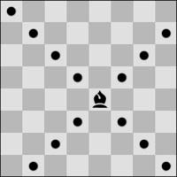
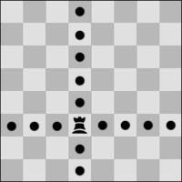
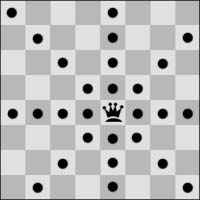
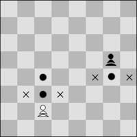
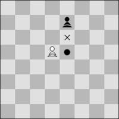
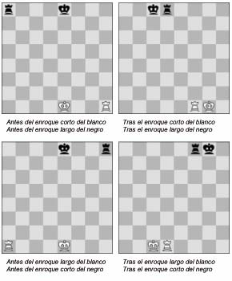

Leyes del Ajedrez
Para aprender a jugar al ajedrez es necesario conocer el movimiento de las piezas de ajedrez. Algunas de las piezas tienen movimientos muy sencillos, como la torre, el alfil, la dama o el rey. Otras son un poco más complejas como el caballo o el peón.
Movimiento de una pieza
3.1 No está permitido mover una pieza a una casilla ocupada por una pieza del mismo color. Si una pieza se mueve a una casilla ocupada por una pieza de su adversario, ésta es capturada y retirada del tablero como parte del mismo movimiento. Se dice que una pieza ataca a otra del adversario si puede efectuar una captura en esa casilla conforme a los Artículos 3.2 a 3.8. Se considera que una pieza ataca una casilla, incluso si no puede ser movida a dicha casilla porque este movimiento dejaría o colocaría su propio rey bajo ataque.
Movimientos del Alfil
3.2 El alfil puede ser movido a cualquier casilla a lo largo de una de las diagonales sobre las que se encuentra.

Movimientos de la Torre
3.3 La torre puede ser movida a cualquier casilla a lo largo de la fila o columna en las que se encuentra.
Movimientos de la Dama
3.4 La dama puede ser movida a cualquier casilla a lo largo de la fila, columna o diagonal en las que se encuentra.
Saltar sobre otra pieza
3.5 Al realizar estos movimientos, el alfil, la torre o la dama no pueden pasar sobre ninguna otra pieza.
Movimientos del Caballo
3.6 El caballo puede ser movido a una de las casillas más próximas a la que se encuentra, sin ser de la misma fila, columna o diagonal.

Movimientos del Peón
3.7 a. El peón puede ser movido hacia adelante a la casilla inmediatamente delan te suyo en la misma columna, siempre que dicha casilla esté desocupada; o
b. en su primer movimiento el peón puede ser movido como en (a); alternati vamente, puede avanzar dos casillas a lo largo de la misma columna, siem pre que ambas casillas estén desocupadas; o
c. el peón puede ser movido a una casilla ocupada por una pieza del adversa rio que esté en diagonal delante suyo, sobre una columna adyacente, captu rando dicha pieza.
d. Un peón que ataca una casilla atravesada por un peón del adversario que ha avanzado dos casillas en un movimiento desde su casilla original, puede capturarlo como si sólo hubiera avanzado una casilla.Esta captura sólo puede efectuarse en el movimiento inmediatamente siguiente al citado avance y se denomina captura "al paso". 
e. Cuando un peón alcanza la fila más alejada desde su posición inicial debe ser cambiado, como parte del mismo movimiento, por una dama, torre, alfil o caballo del mismo color. La elección del jugador no está limitada a piezas que hayan sido capturadas anteriormente. Este cambio de un peón por otra pieza se denomina "promoción", siendo inmediato el efecto de la nueva pieza.
Movimientos del Rey
3.8 Hay dos formas diferentes de mover el rey:
i. desplazándolo a cualquier casilla adyacente no atacada por una o más piezas del adversario,

o bien
Enroque
ii. "enrocando". El enroque es un movimiento del rey y de una de las torres del mismo color y que esté en la misma fila, que cuenta como una simple jugada del rey y que se realiza como sigue: el rey es trasladado dos casillas desde su casilla original hacia la torre y luego dicha torre es trasladada a la casilla que acaba de cruzar el rey.
(1) Se ha perdido el derecho al enroque:
- si el rey ya ha sido movido, o
- con una torre que ya ha sido movida.
(2) El enroque está temporalmente impedido:
- asi la casilla en la que se encuentra el rey, o la que debe cruzar, o la que finalmente va a ocupar, está atacada por una o más piezas del adversario,
- bsi hay alguna pieza entre el rey y la torre con la que se va a efectuar el enroque.
En jaque
3.9 Se dice que el rey está "en jaque" si está atacado por una o más piezas del adversario, incluso aunque dichas piezas no pudieran ser movidas porque dejarían o situarían a su propio rey en jaque.Ninguna pieza puede ser movida de forma que ponga o deje a su propio rey en jaque.